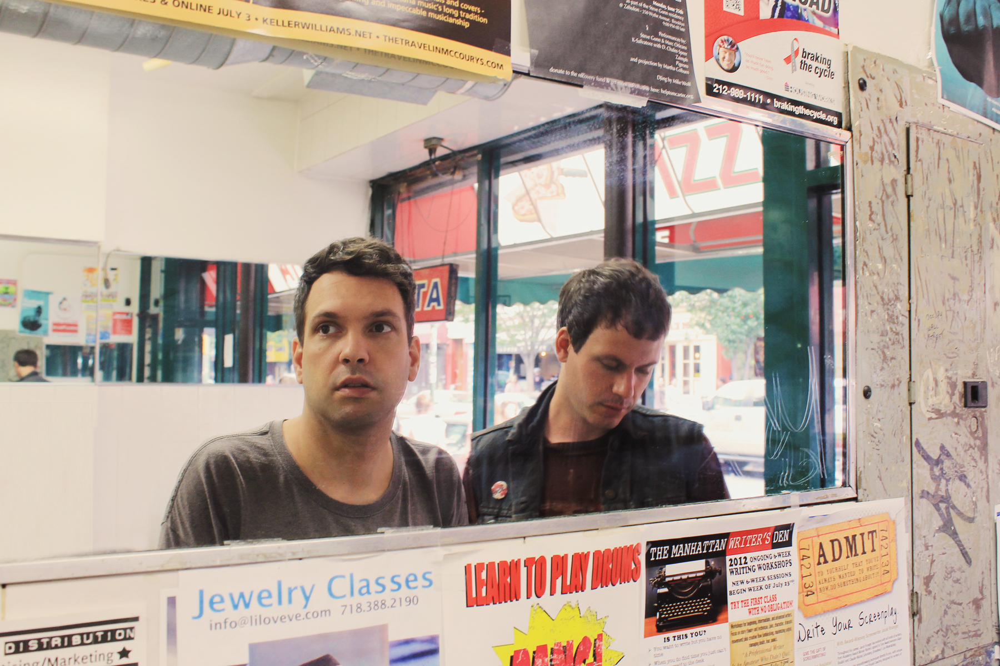

Black Marble is an American music project formed in 2012 in Brooklyn, New York. It is led by electronic musician Chris Stewart and formerly featured Ty Kube of Team Robespierre.
“All the music we gravitate towards has that quality where you can imagine the space it was created in and the people who made it.
Not this handed-down-from-on-high sensibility. A certain handmade feeling is what we’re after. The music doesn’t have to be complex,
but it’s important to carry some residue of the process, especially when working with what can sometimes be construed as cold-sounding
electronics. It’s humanizing.”
-Chris Stewart